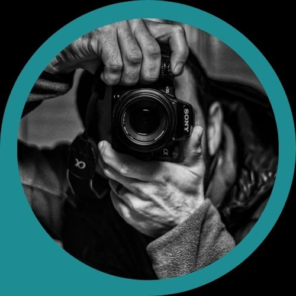

Sobre Javier

Una persona apasionada por el arte: músico, cocinero y fotógrafo. Pasiones
a las que dedica todo su tiempo disponible. Su afición a la fotografía lo ha
llevado a interesarse, en especial, por paisajes, animales y la naturaleza
en todas sus formas.
Javier Antonio Rivas nació en la Patagonia Argentina, en la ciudad de Cutral
Co, del mapudungun Agua de fuego, en 1985. Creció en San Martín de los Andes,
ha vivido en Neuquén Capital, Monte Hermoso (Buenos Aires) y actualmente
reside en Fontaine les Luxeuil (sur de Francia).
El objetivo de este portfolio es compartir con ustedes aquellas
fotografías que Javier ha logrado en este último periodo de su trabajo.
Si deseas utilizar alguna de ellas, con cualquier fin, comunicate a través
del correo electrónico o por cualquiera de sus redes sociales para acceder
a los formatos de alta resolución y contar con sus permisos de uso.